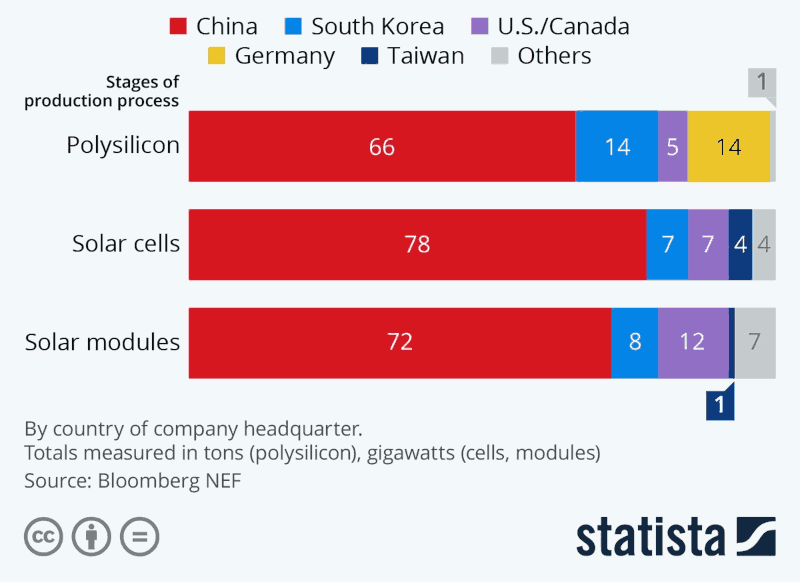

- 更新日
- 公開日
（1）カーボンニュートラルの虚実を、まず科学的に捉えよ
主な質疑
これは要約ですので、正確な質疑内容は会議録をご参照ください。読みやすさを考え、初回（初）と、再質問（再）の質疑を合わせています。また、簡略化のため、理事者側（市役所側）の答弁から敬語表現を省いている部分があります。実際は理事者側のすべての答弁が、市民に対する敬語表現でなされています。
用語について
ここでは、二酸化炭素をCO2と表記します。
なお、石油の由来については、学校で習った生物の死骸が起源だとする説（有機成因論／有機起源説）が主流です。一方で、石油（等）は地球内部の高温・高圧の条件下で生成される、非生物由来のものだとする説（無機成因論／無機起源説）もあります。そのため、化石燃料という言葉ではなく、単に炭化水素燃料という言葉を使う向きもあるようです。ここでは分かりやすいように化石燃料という言葉を使いました。
今回質問する理由
菅総理が昨年10月、『2050年カーボンニュートラル』、脱炭素社会の実現を目指すと宣言。それを踏まえ、経産省は「2050年カーボンニュートラルに伴うグリーン成長戦略」を同年12月に策定した。
一方、この背景にある「CO2の人為的な排出が地球温暖化や気候変動の主な原因である」という説に懐疑的な見解をもつ人々も多い。
たとえば、世界中から900人以上の科学者や専門家が参加するグループが、一昨年9月、国連総長宛てに、“There is No Climate Emergency（気候は非常事態ではない）”という公開書簡を出した。
「政策は科学的・経済的現実を尊重しなければならない」 と結ぶこの書簡には、江崎玲於奈氏とともにノーベル物理学賞を受賞したアイヴァー・ジェーバー氏など、著名な科学者が名を連ねている。
またたとえば、リベラル派の映画監督として知られるマイケル・ムーア氏が昨年公開したドキュメンタリー映画『プラネット・オブ・ザ・ヒューマンズ』では、「太陽光発電や風力発電などの再生可能エネルギーは、政治的目的や特定の人々の利益を実現するために、多分に効果が誇張されており、実際は害となる（ことが多い）」といった趣旨の主張が行われている。
世界的な流れの中、日本が脱炭素社会の宣言をせざるを得ない状況は一定の理解ができる。しかし同時に、小平市は誤った方向に進むのではないかという危惧がある。
「一定の理解」はできるものの、賛同できるものではありません。
たとえば、先日議決された小平市第四次長期総合計画基本構想は、『温室効果ガスの排出をゼロにする「脱炭素化」に向けて』という、明らかに認識不足の一文が記載されたまま議会に上程された。
市が、今後、このような誤った認識に基づいて、「ぱっと見は環境に良さそうだが、実は社会や環境の害となる」事業に、貴重な市の財源を投じ続けることのないよう、確認の意図をもって、質問する。
まず述べておきたいこと
政策判断になるほどの科学的裏付けがない
1つ目は、『「人為的なCO2排出が温暖化や気候変動を引き起こしている」というのは単なる仮説であり、政策立案の判断材料に用いてよいほどの科学的裏づけがない』と主張する専門家がたくさんいること、そして、その主張には合理的な根拠があるということ。
小平市のお金を投じてよいことではない
とはいえ、小平市としては国の決定に従わざるを得ない。
そこで2つ目として、「CO2削減を推進する」という観点から考えても、小平市が進めているような太陽光発電の事業は、CO2削減には今の時点では時期尚早な方法。お金のない小平市がこういった事業に、市の貴重な財源を投じるのは、いまやってよいことではない、ということ。
私は、かつてリチウムイオン系の新型電池の開発や営業に携わっていた。リチウムイオン電池でノーベル賞を受賞された吉野彰さんと御一緒に講演会をさせていただいたこともある。再生可能エネルギーについても勉強し、裏事情もある程度知っているつもり。
太陽光発電技術などの技術革新は重要
誤解しないでいただきたいのは、私は、太陽光発電などの技術革新は、人類の営みとして重要と考えている。
たとえば宇宙ステーションは、方向を変えたり、加速するとき以外は、ほとんど太陽光パネルからの電力で賄う。宇宙には雲や雪がない。非常に理想的な環境。地球上でも、電力網から隔離された場所で太陽光発電が役に立つ。
震災などの発災時も、電力網が遮断され、かつ、太陽光パネルが異常なく使用できるなら、役に立つだろう。
ただし、電力網が遮断されるほどの震災時は、太陽光パネル自体や太陽光パネルを設置した家屋が損傷を受ける可能性も高いと思います。その際の漏電・感電リスクや、消火活動中の感電リスクも忘れてはならないものです。
つまり、太陽光発電がこの世の中に不要だと言いたいわけではない。
化石燃料の使用量をできるだけ減らしていくことにも賛成
また、化石燃料の使用量を減らしていくことにも賛成。
なぜなら、ひとつは、「地下で採掘したものを地上で燃やして大気に入れる」という発想に抵抗を感じること。汚染物質が含まれていることもある。
もうひとつは、日本は石油や天然ガスがあまり出ない。石油は国内需要の約0.3%分、天然ガスも約2.3%分は出ているが、国内の使用量に全然足りていない。輸入に頼るしかないため、なるべく化石燃料の使用量を減らしていくのは、そういう観点ではよいこと。
しかし、現在のCO2削減の施策は間違えている
しかし、「現在は気候変動や温暖化で非常に危機的な状況なので、CO2をどこどこまで減らすために、化石燃料の使用量をとにかく劇的に削減していきましょう」という論理は、人々の福祉に大きな弊害をもたらすものであり、間違えている。
昨日の伊藤議員が言っていたように、インフルエンザワクチンの問題とまったく同じ構造。特定の人々の利益が優先されるような仕組みの中でつくられている、と感じるところがある。
公開書簡について
公開書簡“There is No Climate Emergency”に記された6件の主張のうち、いくつかを紹介する。
温暖化には自然要因と人為的要因の両方がある
地球の気候は、寒冷期と温暖期の間で長い間変化してきた。私たちが温暖化の時期を経験しているのは驚くべきことではない、と書かれている。
IPCCの将来予測モデルと現実の乖離が著しい
CO2削減推進の中心的存在である「国連気候変動に関する政府間パネル（IPCC）」が出した将来予測モデルがあるが、その予想値と比べて現在の気温は非常に著しく低く、モデルの前提に欠陥がある、と書かれている。
これについては、そもそもIPCCモデルなどが前提にしているコンピュータシミュレーションは、学問的研究には非常に有用だが、数年間や数十年間にわたる将来予測に使うものではない、と言っている科学者もいる。
CO2は植物にとってのご飯
おもしろいのは、
CO2は植物にとってのご飯であり、地球上のすべての生命の基盤だ
と書いてあること。
CO2は汚染物質ではありません。地球上の全ての生命にとって必要不可欠なものです。CO2が増えることは自然にとって好ましいことであり、地球を緑化することにつながります。大気中に増加したCO2は世界の植物バイオマスの成長を促進しました。また農業にも利益をもたらし、世界中の作物の収量を増加させています。
ちょっと調べると分かるが、これは事実。
現在の大気中CO2濃度は約400ppmで、大気中の0.04%。50年前の300ppmからかなり上がっているという話がされるが、植物が陸上に進出した太古のシルル紀とかデボン紀のころは、現在の10倍以上のCO2濃度があったと考えられている。
そこから考えて、多くの植物にとって今は「CO2濃度が薄過ぎる＝植物の餌が足りていない」状況なのではないかと言っている人もいる。なお、CO2が150ppm以下になると多くの植物が死滅するとも言われている。
私は詳しくないが、温室栽培における「CO2の施用」というのがあり、土壌にも十分に栄養を与え、水分も十分に与え、CO2濃度を750ppmや1,500ppm程度に高めると、作物の収穫量が2から3割増加するという事実がある。
地球上の緑の量は増加している
また、2019年2月にボストン大学の研究者がNASAの地球観測衛星などを使い撮影した20年間の記録から調べると、2000年代初頭と比べて地球上の緑の量（葉の量）は5%増加している。これは、アマゾンの熱帯雨林に匹敵するぐらいの面積だ。
グレタさんが「危機的状況で、緑がない」ようなことを言っているのとは、ずいぶん違う、そういったことが書簡に書かれている。
ファクトチェック
この書簡に対し、最近よくあるファクトチェックというやつで、IPCC側の人たちから反対意見が示されている。それらを一応ひとつずつ確認したが、内容が薄く、根拠が薄い。科学的ではないという印象をもった。
「温暖化に関する学問的な裏づけ」の世界をちょっと調べると、どうも私がこれまで過ごしてきた科学的な世界とは別の、異質のことがまかり通っている。
IPCCモデルの欠陥
この公開書簡は500人以上の人が署名しているが、日本人として署名しているのは2、3人。いずれもこのテーマに直接関係する学問の分野で第一人者の方々。そのうち、マサチューセッツ工科大学やNASAのJPLでも勤務していた気候専門の学者である中村元隆氏が、「気候科学者の告白」という書籍を出している。アマゾンで99円なので、IPCCを支持している方もちょっと読んでみるとよいと思う。私が言いたいこともここに書いてある。
たとえば、IPCCのモデルは、地球表面の温度上昇に与える影響が非常に大きい太陽エネルギーを不変として扱っていたりする。また、シミュレーションの解像度が低過ぎるとか、恣意的にパラメータを決められるので、結論に合わせて結果を得ることができる、といったことが書かれている。
以上が、書簡の内容と、その関連の人たちが主張していること。
プラネット・オブ・ザ・ヒューマンズについて
次に、プラネット・オブ・ザ・ヒューマンズという映画について。
私はマイケル・ムーアのファンではないが、太陽光発電などを推進する立場にあったと思われる人物が、それを批判する映画をつくっていることは注目に値する。
字幕付きで見られるので、ぜひ市の職員の方も見ていただきたい。
正確ではない情報も含まれていると思うが、環境、CO2、環境保護活動の裏にある「実際のところ」が要点を絞って描かれていて、よい映画と思う。
この映画の中で、次のようなことが取り上げられている。
太陽光や風力は不安定な電源
まず大前提として、太陽光や風力は不安定な電源であるということ。
太陽光発電は、雲がかかったり、雪が降ったり、砂ぼこりがたまったり、周囲の気温によっても発電量が変わる（そもそも夜はまったく発電できない）。風力発電は風がないとまったく発電しない。
停電させないためには、不足分を既存の電力網から供給しなくてはならない。既存の電力網がつながっている先は、既存の発電所だ。
不安定な電源をバックアップする既存の発電所
発電所（電源）にはいろいろある。
| 通称 | 機能・特徴 | 発電方式 |
|---|---|---|
| ベースロード電源 | 定常的な部分の電力を供給 | 原子力発電 石炭火力発電 |
| ミドル電源 | ある程度需要に追従できる | 天然ガス火力発電 |
| ピーク電源 | 電力負荷のピーク時に使用 | 石油火力発電 揚水式水力発電 |
バックアップ電源のアイドリングが必要
これらの電源は、たとえば太陽光発電パネルに雲がかかったりして発電できなくなったり、負荷が急激に変動した際は、基本的に、リアルタイムで出力を調整できない。変動に追従できない。
ある程度は追従できても、リアルタイムではできない。ということは、それだけの分を常に待機して動かしておく必要がある。
いってみれば、バックアップ電源としてのアイドリング。車がガソリンを吹かして待機しているような状態。アイドリングがある以上「太陽光発電によってCO2を削減できる」という論理にはならない。太陽光発電で発電する分と同量のバックアップ電源を稼働しておく必要がある。
これは蓄電池を併用しても、ある程度は同じ。一般の家庭につけるような太陽光パネルの大きさでは、家庭で必要な電力の1日分も賄えない。すると、1日分の電力を仮に蓄電できても、次の日に天気が悪ければすぐに充電が空になる。バックアップ電源が必要という状況は変わらない。
そういったことが、この映画には概要として出てくる。
自然保護活動が金儲けになっている
それ以外にも、自然保護活動の背景にはいろいろな金儲けの話があると指摘している。
アル・ゴア氏の話や、米国で著名な環境保護論者のビル・マッキベン氏が、裏でゴールドマンサックスなどの金融業界と仲がよいといった話が出てくる。
市も、そういう裏の話や反対意見も踏まえた上で、施策を行っていただきたい。
たとえば、年に4、5回、市はソーラー発電に関して子どもたちに環境学習などをしているという。何を教えているのか。裏にどんな電源のバックアップがあって、発電が止まったら、どう補うのか、そういう話もしていただきたい。
太陽光発電について
発電規模の計算方法は
（仮称）小平市第三次環境基本計画（素案）に記載されている、令和元年度末の市内太陽光発電規模約5,347kWは、どう計算したか。
次の合計。
- 市公共施設の発電出力：474kW
- 市の助成制度を使用した市民・事業者の発電出力：4,797kW
- 市民共同発電所の発電出力：76kW
これは供給側から見た理想的な値で、太陽光パネルの端子に「理想的な負荷が接続された際の、端子に現れる電力」かと。実際に使っている電力ではない。
公称の出力であるkWを合計しただけだと思うが、実際に供給できるのはもっと低い値。
太陽光発電協会（JPEA）のガイドラインに載っているが、そこには「最大でも公称電力の70から80%しか出力できませんよというふうに、ちゃんとお客さんに説明するようにしてください」みたいなことが書いてある。
日照条件、周辺の気温、劣化状況、ほこりが積もっているなどの状況により、実際の出力は理想的な値にはならない。さらに、使用する側では、パワーコントローラ、インバータの損失や回路損失があり、これも、入力電圧や負荷の状況で、ずいぶん変動する。
「実際に使える電力は、使ってみて測定しないと分からない」でよいか
つまり、「実際に使える電力は、使ってみて測定しないと分からない」という認識でよいか。
今議員から教えていただいたとおり、その0.85ぐらいが損失になる。今の答弁では掛け合わせておらず、電気容量として説明したもの。
損失になる分は0.85ではなく、0.15（15%）の間違いですね。
その0.85も、実際はもっと下がると思う。0.85は、理想的な条件をいくつか設定しての話なので、実際に使っている電力量のほうから見る必要がある。
該当の市内太陽光パネルについて、国産と外国産の割合は
もうひとつの質問として、合計5,347kWになった太陽光パネルのメーカーについて、国産と外国産の割合は。
それぞれの工事で発注し、仕様書にしたがって受注者が設置しているものだが、メーカーとしてはすべて国産。
📈 太陽光パネルはほぼすべて中国産
再質問はしませんでしたが、メーカーは日本でも、下図のとおり、パネルはほぼすべて外国産で、大半が中国産です。
（出所：Bloomberg NEF、提供：Statista）
発災時に使える容量と、発災時にほかの人たちも使えるようになっているか
5,347kWのうち、震災のときにも使える容量は。
また、その公共性として、その装置を所有している方だけではなく、ほかの周りの人たちも使えるようになっているものはあるか。
蓄電池がついているかどうか、ということか。小平市の太陽光パネルの場合、ソーラーシステムの場合は、設置してあるところはある。今資料が見つからないが、ほぼ蓄電池はついていない太陽光パネルとなっている。
また、電源に変換できるものとできないものについても両方ある。
震災のときに自立して発電できるかとかということだが、そういったことは把握していないか。
震災のときにその家一軒だけで使えるのではあまり意味がない。周りの家庭も使えて、たとえば携帯電話の充電ができるとかということがあればすごく役に立つが、どうか。
自立発電として使えるものもある。
データを後でもらいたい。
蓄電池がついていれば、ある程度は意味が出てくる。太陽光パネルももっと広い面積で、蓄電池がついていれば、負荷平準化という考え方がある。
その考え方の中ではある程度メリットがあるだろうという話にはなる。蓄電池もついておらず、CO2の総排出量を考えたときには意味がない、そういったことをしているのではないか。
太陽光発電に投じた資金の総額は
市内太陽光発電規模約5,347kWの実現に市が投じた資金の総額は。
公共施設の建設／大規模改造工事と一体で太陽光発電設備の設置工事を実施した場合などもあるため、おおむねの額で、
- 国や東京都等の補助金を除いて、市が投じた額：2億4,832万円
- 市の助成制度を使用した市民・事業者への助成額：1億3,107万円
の、総額3億7,939万円。
市民共同発電所については、市が負担した額はなし。
国や都からの補助金はいつごろまで出ていたか、また、出なくなった理由は
当初出ていた国や東京都からの補助金はいつごろまで出ていたか。また、補助金が出なくなった理由は。
全体の建築の中で補助金をもらう場合もあるので、そのあたりは案分して計算しているが、今でも国や東京都の補助はある。
それは公共施設等についての話。市民の方に補助を出している1件上限額12万円までの件は、国や東京都からの補助金は充てられているのか。
そのモニター助成は市の独自の補助、助成として行っている事業。
市民への助成金は、市から1件12万円までで、年間50件までの上限がある。掛け算すると年間600万円ぐらい。毎回上限まで申請があるという話だったので、年間600万円ぐらいが市の財源から出されているという認識でよいか。
今の現状では、太陽光発電の助成と、家庭用燃料電池エネファームの助成を合わせて上限で1,000万円の予算の中で実施している。
😩 焦点をずらして違う結論に誘導するのはやめてほしい
補助金のこともそうですが、太陽光のことを聞いているのにエネファームのことを入れたり。焦点をぼかして違う結論に誘導されると、すぐに課題が明らかになりません。自己防衛本能なのでしょうけれども、始めからきちんと個別具体で答えてもらえれば時間の節約にもなります。残念です。
そのうち太陽光発電の助成はいくらなのか。
市民への助成金に関しても、国からの補助金がかつては出ていたと思うが、それで正しいか。今は市独自で出しているが、かつて出ていたのか。それがいつまで出て、その補助金が止められることになった理由は。
国の助成については、いつまでというのは今資料が手元にないが、以前あった太陽光発電システムに対する助成はなくなり、それとは別に蓄電池の助成があると記憶している。
また、東京都も同じように太陽光発電システムと蓄電池を一緒につけた場合、蓄電池にのみ助成があると記憶している。
2030年までの補助目標4,000件のうち、太陽光発電システムは何件を予定しているか
小平市第三次環境基本計画にある「今後2030年までの補助目標を4,000件に」のうち、太陽光発電システムは何件予定しているか。
これまでの環境基本計画の中では、太陽光発電システムの助成ということで当初目標にしていたが、今回はエネファームや、今後、ニーズのある別の、より効率的なそういった環境によい機器を助成として検討していかなければいけないということで、太陽光発電システムのみの目標件数はうたっていない。
年間の総使用（総消費）電気容量は
市内太陽光発電による年間の総実績使用電気容量（Wh）は。
- 昨年度の公共施設の実績：50万8,312kWh
- 市の助成制度を使用した市民・事業者の実績：把握していない
市民共同発電所も把握していないが、発電量のほとんどを売電していると聞いている。
CO2の削減効果の話をするなら、使っている分を測定しないと意味がない。なぜなら、発電していても全然使っていないときはCO2の削減効果はゼロだから。むしろ太陽光発電装置の製造コストがあるのでCO2は増える換算になる。
本来は、総実績使用電気容量から換算してCO2をどれだけ削減できた、という計算をしなきゃならない。
私たちが普段使っている電力は、実際の使用量で請求が来る。太陽光発電についても、使用量を見なくてはならない。そういったことはしているか。
50万8,312kWhの測定はどうやっているか。パワーコンディショナーから出てきている値を使っているのか。
各公共施設に計測器を設けており、実際の計測値を集計している。
計測値にもいろいろある。本当に使われている電気量なのか疑問。
本来、
- 年間で発電可能な電力量
- そのうち実際にどれだけ使用したかという実績の使用電気量
その比が必要。それを数年間測定し、その平均値を使うなどして、本来の太陽光発電による効能をちゃんと計算する必要がある。
年間の総売電額は
市内太陽光発電のうち、年間の総売電額は。
昨年度の売電額は、
- 公共施設：約142万7,000円
- 市の助成制度を使用した市民・事業者および市民共同発電所：把握していない
負の遺産・固定価格買取制度
2011年にソフトバンクの孫正義氏がメガソーラー事業への参入を表明し、当時の菅直人総理と会食した。その後、今では『負の遺産』とも呼ばれている『固定価格買取制度（FIT）』が始まった。
孫氏が「40円を下回ると非常に厳しい」と言ったことで、当初1kWh当たり42円で開始された。
固定価格買取制度が貧富の差を広げる
では、その売電の分のお金を誰が払うのかというと、私たち国民だ。
太陽光発電を使っていなくても、貧しい家庭であっても、広く徴収される。消費税増税はかなり騒がれるが、なぜかこちらはあまり騒がれていない。
平均的な1世帯当たり現状で月1,000円ぐらいかかっている。うちの場合、1月は800円だった。これは所得に関係なくかかる。ということは、貧富の差を広げる働きがある。
市の矛盾した行為にどう整合性をつけるのか
考えると、市に「ふるさと納税を何で活用しないんですか」と聞くと、「他市の財源を奪うからあまりやりたくない」という話だった。
しかし、この固定価格買取制度の、再生エネルギー賦課金、これはお金のない人々から奪っていることになるのではと。そういったことに市がお金を出してよいのか。
- ふるさと納税は他市から財源を奪うからやらないと言っている
- お金がない人たちからも奪うような仕組みに市がお金を投じている
両者の整合性をどう取ればよいのか。
ふるさと納税で他市の財源を奪うから市としてやっていかないということは言っていない。これはあくまでも、例の上水南町のおそらく寄附物件の話かと思うが、それは全然別の話。あれは特殊な寄附。ふるさと納税には適していないと判断している。
😊 ふるさと納税に適していた！
この質問とは直接関係ありませんが、ここで「ふるさと納税に適していない」と答弁した津嶋部長が辞められてからすぐ後に、私たちの活動が効果を発揮してふるさと納税が活用されることになり、小平市の歴史に残る金額の寄附を集めました！😁
詳細はこちらにまとめています。
私の認識と違うところで、今確認できないことで水かけ論になるのでやらないが、そんな話だった。
もし、そういう前提がなかったとしても、特定の人々の利益のために全国の人々からお金を集める。しかも、発電所のアイドリングで消費している分等を考えれば、CO2の削減にも大してつながっていない。そんなことをしていてよいのか。
CO2削減量はどう計算しているか
太陽光発電によるCO2削減量は、どう計算しているか。
公共施設および市民共同発電所のCO2削減量は、第二次エコダイラ・オフィス計画で使用しているCO2排出係数を使い、次で算出。
年間の発電量 × 0.374
市の助成制度を使用した市民・事業者の方は、一般社団法人太陽光発電協会のホームページに掲載されている結晶系シリコン太陽光電池による1kW当たりのCO2削減効果に、市の助成制度から導き出した一般家庭の平均出力および助成件数を掛け合わせて算出。
計算式も分かるところはあるが、先ほどから言っているように、発電がストップしたときにバックアップするための発電所のアイドリング分も考える必要がある。それは考慮に入っていないということでよいか。
こちらの計算は、排出係数を掛け合わせて算出したり、あとは太陽光発電協会のホームページに記載されている1kW当たりのCO2の削減効果のそういう基準値を基に算出している。
家庭用燃料電池について
CO2削減量はどう計算しているか
家庭用燃料電池によるCO2削減量は、どう計算しているか。
一般社団法人燃料電池普及促進協会のホームページに掲載されている一般家庭の年間のCO2削減量に、市の助成制度を使用した市民・事業者への助成件数を掛けて算出。
一応太陽光発電協会のサイトも見たが、どこに書いてあるのか。以前書いてあったのに今は書いていないが。別の計算式などを一応こねくり回してそういう数字になるのかな、というところは分かっているが、実際はアイドリング分も考えなくてはならない。
CO2削減を目指すならペレットストーブを進めた方がよい
ペレットストーブを試験運用してはどうか
暖房のエネルギー消費量は非常に大きい。ペレットストーブや暖炉の活用により、CO2の総排出量を大きく減らすことができる。市内で伐採した樹木や剪定枝をペレットにし、市内公共施設等でペレットストーブの試験的な運用を行ってはどうか。
ペレットストーブは環境に優しいストーブである一方で、ペレットの保管、火災の危険性、臭いや煙の発生などの課題があるので、他市の事例を参考に今後研究していく。
ペレットストーブの市内設置状況を把握しているか
市内でペレットストーブや暖炉を設置している家屋数や利用状況を把握しているか。
把握していない。
命ある植物に対して不適切な表現だが、植物は世界で最も理想的な太陽エネルギーの蓄エネ装置。
太陽光を受け、光合成で空気中のCO2を吸収し、水や窒素など栄養素を地面から吸い取り、自分でどんどん育っていく。
それを燃やしたときに出る熱は、もともとはすべて太陽のエネルギー。木を燃やすときに排出されるCO2は、育つときに吸収した分だけ。トータルで考えるとCO2は一切増えていない。CO2削減をするなら、そういうライフサイクルにわたって考えなくてはならない。
特にペレットストーブというのは需要に追従できる。寒いときには火を入れて、不要になれば消せばよい。太陽光発電のように、バックアップ電源をアイドリングしておくような無駄もない。
ライフサイクルを考えたトータルでの排出削減が市には求められているのか
国から2050年カーボンニュートラルとか、CO2削減という話の中で、このようにライフサイクルを考えてのトータルでの排出削減ということが市には求められているのか。それとも、排出の分だけを見て削減してくださいという話になっているのか。
まず計画の中で求められているものとしては排出量を出すことになっている。それとは別に、吸収量についても提示することはできる。
ただ、その排出量から吸収量を引いて出すということは今できない。公表する数値としては、市でいうと地域エネルギービジョンの排出量については、別に吸収量を示すことはできる。ただ、小平市は、地方と違い、あまり雑木林とかの面積も大きくない。また計算等のやり方等が難しいことから出していないが、26市でも吸収を出しているところはない状況。
『ふれあいの森』や市内雑木林の活用を
小平町との『ふれあいの森林（もり）』事業や、市内にある雑木林の存在は、カーボンニュートラルという観点から、市に恩恵をもたらす可能性はあるか。
ふれあいの森林づくり事業は、昭和59年当時の林野庁が進める『分収造林制度』の適用を受けるもので、姉妹都市である北海道小平町の国有地に植林した樹木を成木後に販売し、国と植林者で収益を分配する事業。
一般的に森林としてCO2を吸収する機能は有するものの、カーボンニュートラルの観点から、市に直接恩恵をもたらすものではない。
市内の雑木林は、CO2の吸収源として、地方の森林と比べて面積が少なく、カーボンニュートラルの観点からの恩恵は少ないが、緑を確保することは人々に潤いや安らぎを与え、生物多様性の保全に寄与するなど、さまざまな恩恵をもたらす。
排出権取引ができる仕組みなのか
地方の公共団体の間で、排出権取引のような、こっちでは吸収分があるからといった、そういうやり取りができるような仕組みはあるか。
そのような取引は実際あり、たとえば府中市だと、地方の森林の植林の費用を出し、その分、吸収量を購入しているような形は取っている。ただ、それが一度、たとえば続けて何年間にもわたって、一回購入、その植林の分の費用を払った場合には、その年の分のCO2削減量しか、吸収量しか計上できないので、続けてやるような必要があると認識している。
そこは問題がある。排出量だけを見て、減らしていこうという話になると、製造時の問題や、トータルのライフサイクルコストの中でのCO2削減量という問題は考えられなくなってしまう。
また、先ほどから言っているアイドリング電源というところもやはり考慮に入れてもらわないと困る。
こういうことを市に言ってもしょうがないが、そういう前提に他って、市として施策を考えていただきたい。
まとめると、太陽光発電の補助は、私としてはまだまだ時期が早いと考えている。
- アイドリングが解消できるようなことがない
- 小平市では蓄電池が一緒についている太陽光発電が非常に少ない
- 蓄電池がついていたとしてもその問題は大きくは変わらない
そういったことから現状を考えると、小平市が行っている633万円くらいの補助金は、単にメーカーへの助成を行っているのと同じことになる。これは小平市が今率先してやることではない。そのあたりをもう一度見直していただき、施策につなげていってほしい。
では、いつどういうタイミングで太陽光発電を入れていけばよいかというと、
- 太陽光発電のシステムや蓄電池の性能が十分に上がる
- 製造時の環境負荷が十分に下がる
- 需要にリアルタイムで追従できる発電所が生まれる
- 発電所のアイドリングがなくせる技術が生まれる（たとえば、蓄電池と発電所をオンラインでつなぎ、これだけ発電量が減りそうだから出力を上げていこうといった技術ができる）
- それを実現するのが『小型原子力発電所』という手段ではない
- 震災時にも公共性がある
- 応益者負担という観点から問題がない
- 再エネ賦課金のような貧富の格差を拡大してしまう要因が削られた法整備になる
そういった条件が整ってからやるべきことだと私は考えている。
以上